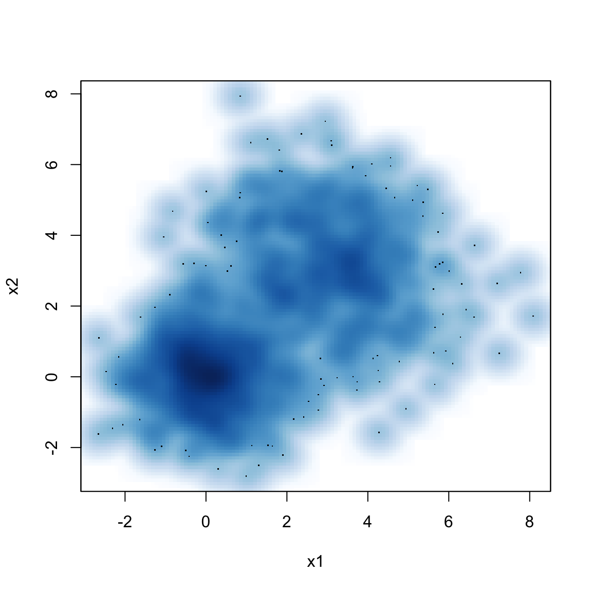

Feel free to use the knitr infrastructure with dozens of tunable options in your document.
set.seed(123)
n <- 1000
x1 <- matrix(rnorm(n), ncol = 2)
x2 <- matrix(rnorm(n, mean = 3, sd = 1.5), ncol = 2)
x <- rbind(x1, x2)
head(x)## [,1] [,2]
## [1,] -0.56047565 -0.60189285
## [2,] -0.23017749 -0.99369859
## [3,] 1.55870831 1.02678506
## [4,] 0.07050839 0.75106130
## [5,] 0.12928774 -1.50916654
## [6,] 1.71506499 -0.09514745smoothScatter(x, xlab = "x1", ylab = "x2")
You can include code snippets of languages other than R, but note that the block header has no curly brackets around the language name.
// [[Rcpp::export]]
NumericVector timesTwo(NumericVector x) {
return x * 2;
}You can also write math expressions, e.g. \(Y = X\beta + \epsilon\), footnotes1, and tables, e.g. using knitr::kable().
| Sepal.Length | Sepal.Width | Petal.Length | Petal.Width | Species |
|---|---|---|---|---|
| 5.1 | 3.5 | 1.4 | 0.2 | setosa |
| 4.9 | 3.0 | 1.4 | 0.2 | setosa |
| 4.7 | 3.2 | 1.3 | 0.2 | setosa |
| 4.6 | 3.1 | 1.5 | 0.2 | setosa |
| 5.0 | 3.6 | 1.4 | 0.2 | setosa |
| 5.4 | 3.9 | 1.7 | 0.4 | setosa |
| 4.6 | 3.4 | 1.4 | 0.3 | setosa |
| 5.0 | 3.4 | 1.5 | 0.2 | setosa |
| 4.4 | 2.9 | 1.4 | 0.2 | setosa |
| 4.9 | 3.1 | 1.5 | 0.1 | setosa |
A footnote here.↩